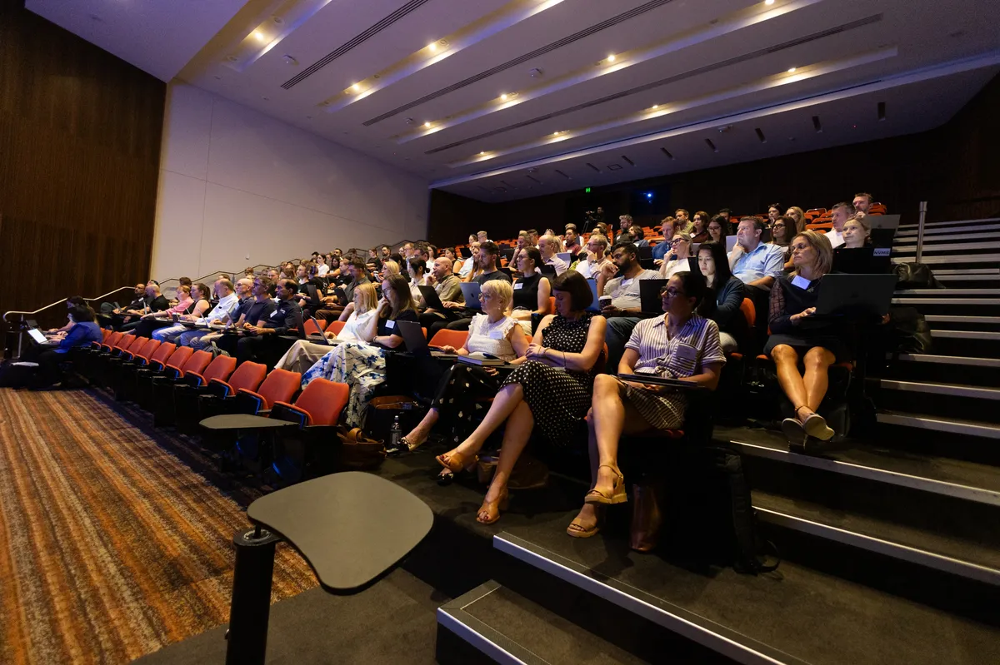
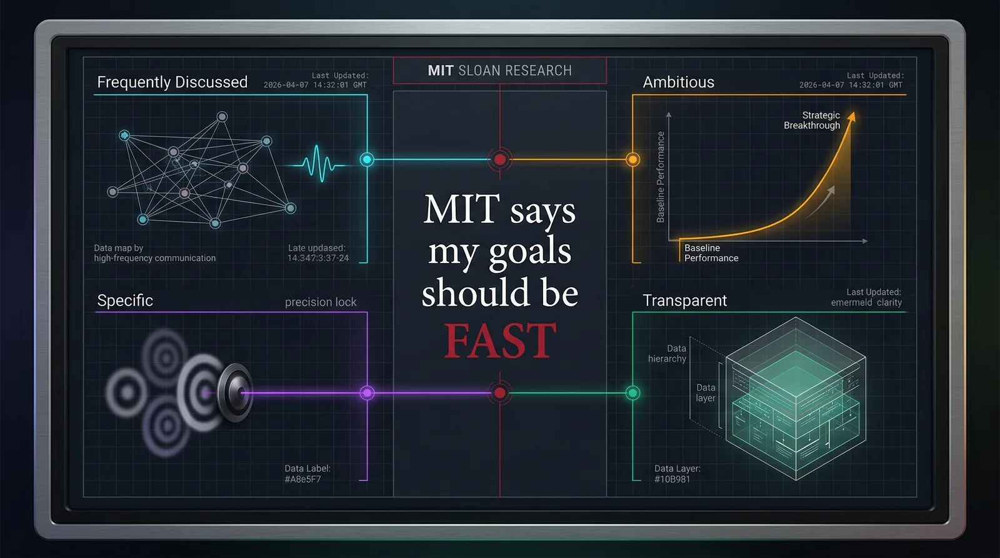
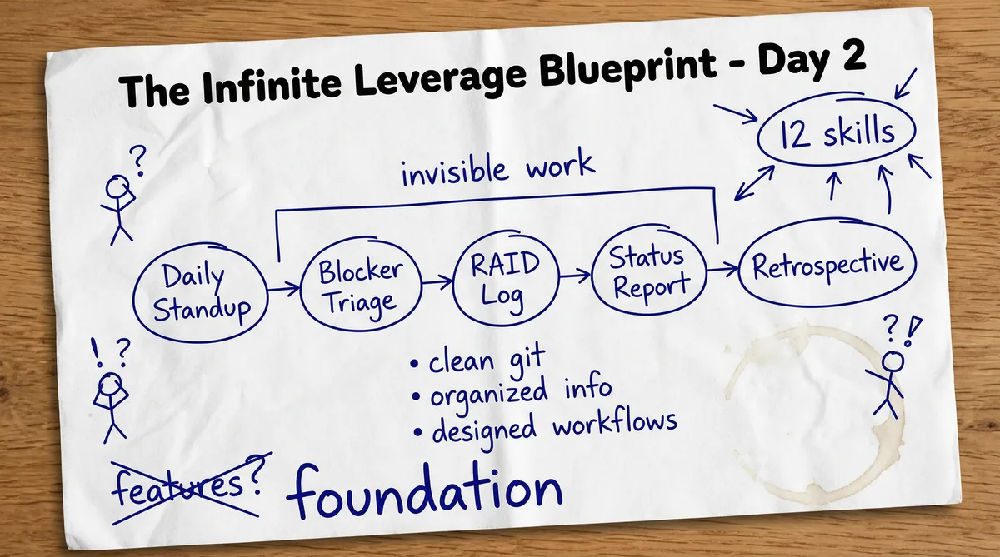
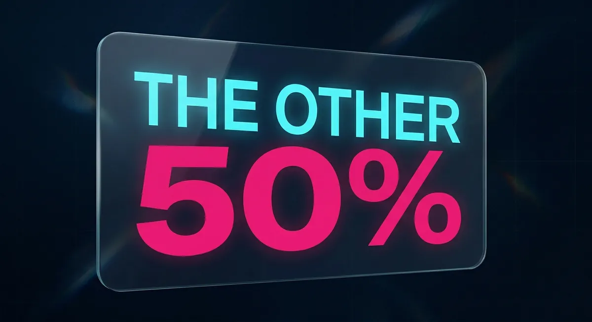
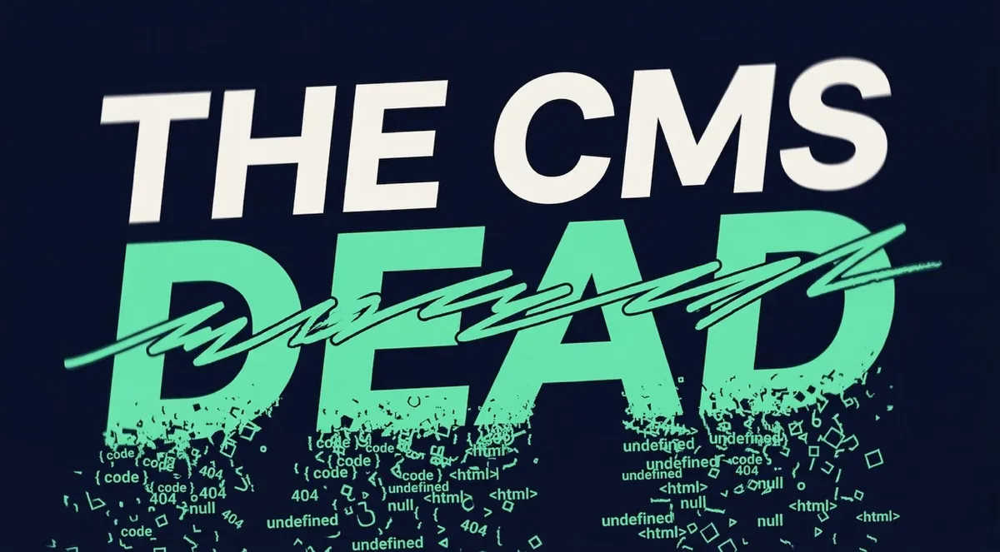
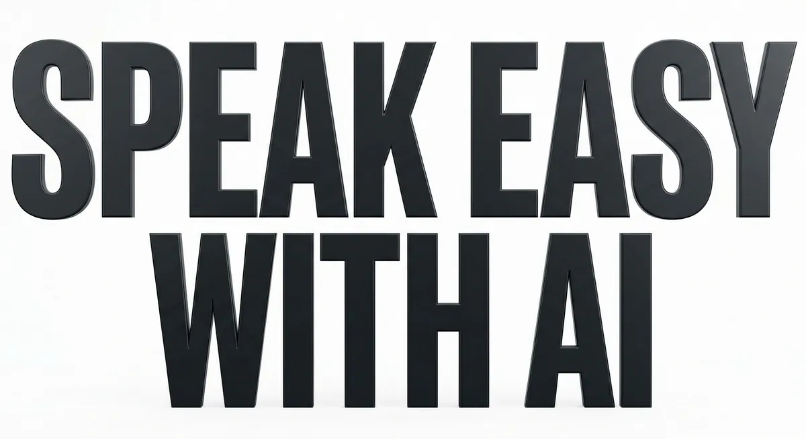
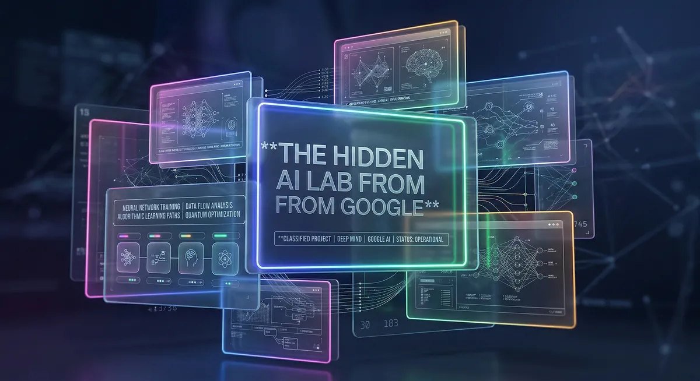
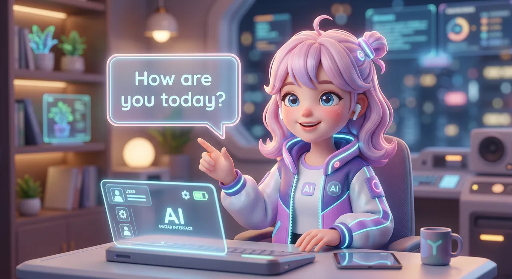

AI for Learning & Upskilling
The Four Offices of the Future
95% of companies see no ROI from AI. Not because the technology doesn't work. Because organizations can't connect it to outcomes.
Read Article →CAIO Coach · Blog
Practical frameworks, real-world case studies, and actionable insights for leaders navigating the 50/50 era of human + AI work.
FEATURED

95% of companies see no ROI from AI. Not because the technology doesn't work. Because organizations can't connect it to outcomes.
Read Article →ALL POSTS

One foundational tooling call, a 5-day Infinite Leverage Blueprint client who bought the seat while we were still building it, and a stack of teach-the-non-techie work that turned out to be the curriculum we already owed them.
Read Article →
The PM agent ran its first standup without me. It pinged the wrong channel. A major PR merged un-reviewed. A 1-person agentic company is not 1 founder plus N agents, it is 1 founder plus N agents plus the comms layer.
Read Article →
Most teams don't fail because they set the wrong goals. They fail because the goals disappear by week three. Here's how to combine OKRs and FAST into a system that actually drives behavior.
Read Article →
We thought we'd ship five agents. We shipped 12 production-grade skills — and spent most of the day on invisible foundation work. Here's what that actually looks like.
Read Article →
Five AI employees, two offices, one weekend. The exact Day 1 playbook — from Toyota Kata to a fully running org chart with no payroll and no hiring process.
Read Article →
Leadership used to be 100% people. Now half of your team is AI. Two skills unlock the other 50%: ABC (Always Be Cataloguing) and workflow design.
Read Article →
TINYpulse raised $9.5M with top investors. The founder still couldn't read the codebase. Here's what changed when AI collapsed the wall between founders and engineering.
Read Article →
Non-technical founders can now control their content and ship like engineers. No WordPress. No plugins. No waiting on developers. Here is the 4-step system.
Read Article →
Jack Dorsey cut 40% of Block's workforce on a profitable quarter. The stock went up 24%. Here's what that means for every leader heading into 2026.
Read Article →
Paul Chu spent 26 years building businesses across Hong Kong, Russia, Indonesia, and beyond. One slide. 18 learnings. Here's what was on it.
Read Article →
Hotels have more guest data than ever before. They just don't know how to activate it. The AI Personalization Flywheel explains what's missing and how to fix it.
Read Article →
95% of companies see no ROI from AI. Not because the technology doesn't work. Because organizations can't connect it to outcomes.
Read Article →
Moving beyond traditional talent management to create systems that grow with your organization and leverage AI.
Read Article →
The difference between average AI users and power users isn't intelligence. It's how they iterate and refine.
Read Article →
Understanding the ripple effects of major tech layoffs and what they mean for AI adoption in business.
Read Article →
Cut through the noise. Here are the marketing trends that will actually impact your business this year.
Read Article →
Your personal brand is already influencing your organization. Learn how to harness it intentionally.
Read Article →
Practical guide to creating custom GPT assistants tailored to specific business roles and use cases.
Read Article →
Review and comparison of the best AI dictation tools available, with practical use cases for each.
Read Article →
Exploring Google's AI Studio tools and the broader ecosystem of AI applications for business.
Read Article →
How businesses are using AI avatars to enhance customer engagement and internal training programs.
Read Article →